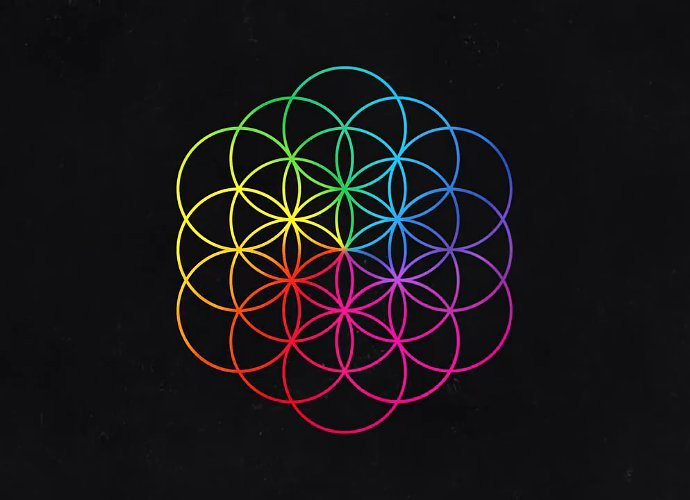

3D Modeling the Circle of Life with Laser Printing
The inspiration for this assignmet comes from my love for Coldplay! The album art for one of their albums uses this flower of life that I've always found fascinating. It's been used in various religions, cultures, art, and architecture for centuries. While is a 2 dimmensional shape, I was curious to see how playing with circles 3 dimensionally might look like!
I started out by recreating the flower of life two dimmensionally so I could understand the relationships between all the circles. Here's what that looked like:

Then I moved to the third dimmension. I started by drawing a circle with a 5cm diameter, with four diametrically opposite 1cm trims rectangular trims ~1.7mm in width (which I derived by measuring the thickness of my recycled piece of cardboard).
Next up: test 1! Let's see how this design converts to reality. Status: FAIL! Turns out the thickness of the cardboard on the edge I measured was thinner than the middle. Next step: ITERATE!
I remeasured, redesigned, and reprinted. This time I added more connections to the circle because I realized my original design didn't have enough connections as my two dimmensional design. Next step: CUT!

STATUS: SUCCESSSS! The slots were a little snug but they fit and I was able to create the three dimmensional version of the flower of life! CHECK IT OUT!
The three dimmensional flower of life inspired me so much I redid the assignment with a completely different shape to see where it would take me! And this time, I even tried joining them IN rhino. CHEEEECK. IT. OUTTTT!

This is what the squares looked like in reality! Do I know what this is? No. Did I have fun making it? Yes. Did I struggle making it here? Yes. Would I do it again? HECK YES.
Here are all my source files!
2D Flower of Life A1: Try 1 A1: Try 2 A1: Try 3
Unfortunately, I left all my Illustrator files I used to make the prints on the Mill's USB but I'll try to update this if I can get my hands on the same USB again :) Thanks for taking the time to view my work. Stay tuned for assignment 2 where I play with a grasshopper...